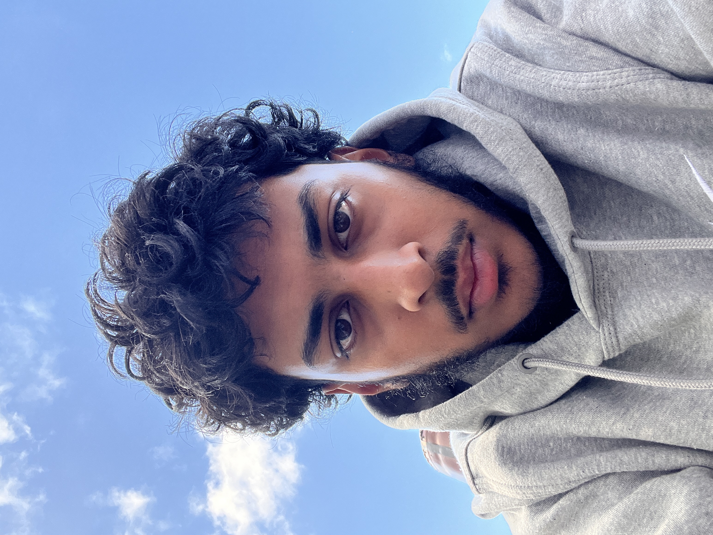

Yusuf Ahmed
Aspiring Software Engineer
based in London, UK

Aspiring Software Engineer
based in London, UK
Rather than pursuing a traditional university path, I have chosen to embark on an independent journey to become a Fullstack Software Engineer. Currently, I am focused on Frontend Development, where I am building a strong foundation in frontend technologies. As I advance, I aim to deepen my knowledge and transition into full-stack development.
I’m passionate about working on projects, whether it’s tinkering with my physical tools to make something more efficient or bringing a software idea to life. I love the process of building something from the ground up, solving problems along the way, and continuously improving things. Whether I’m fixing an issue or adding new features, the challenge of making things better is what motivates me.
My current skillset includes:
Python HTML CSS JavaScript
(I am currently building on these skills and plan to expand my skill set in the future).